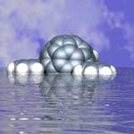
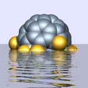

| |
These are some of the stranger images inspired by my work in fullerenes and nanoscience.
If you are interested in
using these images please
contact me. Please don't use without permission. All images on this site are ©Chris
Ewels. Click on an image to see a larger version.. The main image gallery is here.
|
|
Dreams of Buckminster Fuller
Buckminster Fuller, famous for his geodesic dome structures, once designed a dome large
enough to cover mid-town Manhattan. Now his structures are reappearing in the chemistry
of the nanoscale. So why not extrapolate a little?! |
|
|
Born in stardust
C60, the carbon molecule which arguably started the whole nanoscience revolution
in the eighties, was originally discovered by accident - by a group of scientists trying to
understand the formation and behaviour of carbon molecules in interstellar gas clouds. |
|
|
Yesterday's Technology
Is silicon technology really reaching its limits? Despite predictions of its
demise silicon continues to lead the electronics field, particularly with innovations
such as strained
silicon and new silicon based millipede
data storage set to overtake hard disk drives. The image is a slice through
a dislocation in silicon containing
a hydrogenated soliton.
(Millipede now gone
nano!) |
|
|
Shaken not stirred..
View along the core of a double walled carbon
nanotube (two nanotubes, one inside the other). |
|
|
Tabletop Models
A knee join between two nanotubes of different sizes (8,0)-(7,1).
To form the joint a pentagon (blue) and heptagon (yellow) are
required in the network of hexagons. The lower half of this hybrid
is a semiconductor, the upper part is a metallic chiral nanotube.
From the work of Phillipe Lambin. |
|  |
Floating Fullerenes
Nanoscience is a subject defined by its dimension. Sometimes
it's fun to play with that a little...
(if a buckyball was as big as a football, a football would
be as big as the earth!) These flourinated
fullerenes come from the work of Roger
Taylor and Adam Darwich |
 |
|
Russian Dolls
Carbon Onions are carbon balls (fullerenes) within carbon balls.
The image shown is C540 enclosing C240,
itself enclosing C60 (from a
computer calculation by the AIMPRO
group). Many carbon nanostructures
are remeniscent of the marine biology diagrams of Ernst
Haekel. |
|
Nanoship
A tribute to classic Sci-Fi book covers of the 70s and 80s - vast
spacecraft or tiny molecule? Nano - it's all a question of scale... |
Back to main image gallery.
|
|
{kind=link}
{kind=link}
{kind=link}
{kind=link}
{kind=link}
{kind=link}
{kind=link}
{kind=link}
{kind=link}
{kind=link}
{kind=link}
{kind=link}